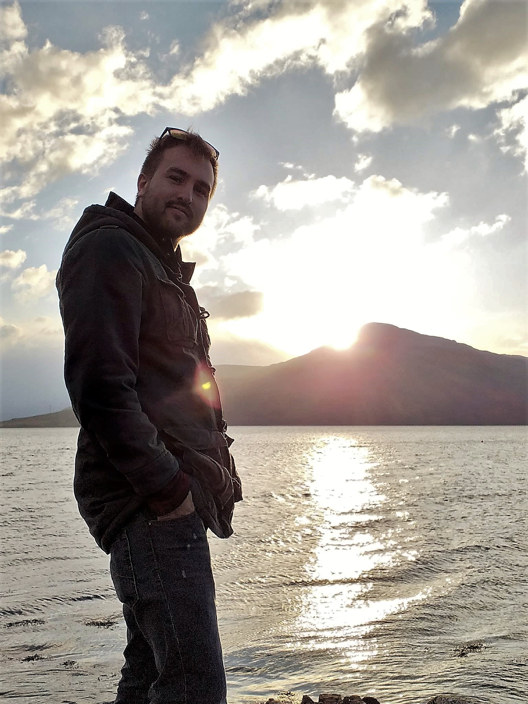

Welcome! 
This website is home to my projects, resume and amateur photography from my world travels.
This is a good place to introduce yourself. What do you love to do? Where are you from? What is your current job?
This also might be a good place to link to your resume, email, or portfolio as well.
Linked In
Shiny DSSG App
Resume
Gallery


Project Spotlight
Give a brief description of what this project is and what role you played. It can also be helpful to include a link
View ProjectM.Sc. Applied Mathematics from the University of British Columbia.
B.Sc. Applied Mathematics from Metropolitan State University of Denver.
Research Scientist
908 Devices
Dec. 2018 - Current
- Build effective algorithms to aid in mass spectrometry research.
- Create internal front-end usability for data analysis with said algorithms.
- Apply cutting edge statistical models to algorithm performance to tune it's capabilities to project specific needs.
Researcher
University of British Columbia
Sept. 2016 - Sept. 2018
- Researched asymptotic behavior in non-smooth dynamical systems to extract tipping behavior in the Stommel Model. Thesis
- Peformed the statistical analysis involved in dump truck failures for SSR mining.
- Partnered with Microsoft and the city of Surrey to build an interactive application for spatial data analysis. Shiny DSSG App
Mathematics Tutor/Researcher
Metropolitan State University of Denver
Aug. 2013 - Aug. 2016
- Initiated the statistical analysis on a local river partnered with the non-profit Groundwork Denver.
- Presented several talks at conferences such as the Joint Mathematical Meetings, Annual Symposium at NCAR, and regional meetings.
- Involved with numerous mathematical competitions/projects. Most notably, Meritorious Winner of the 2016 Mathematical Competition in Modelling.
Programming Languages
- Python
- Matlab
- R
- Julia
- Git
- Latex
Contact
I'm always interested in cool side projects that lead to cool developments. Please feel free to reach out to my personal email at cody.griffith94@gmail.com